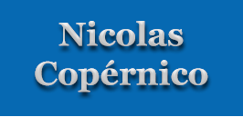

|  | ||||||
| Biografía de Nicolas Copérnico | ||||||
|
Nacido en el seno de una rica familia de comerciantes en Torun, actual Polonia en el año de 1473, Nicolás Copérnico quedó huérfano a los diez años y se hizo cargo de él su tío materno, canónigo de la catedral de Frauenburg y luego obispo de Warmia. En 1491 Copérnico ingresó en la Universidad de Cracovia. En 1496 pasó a Italia para completar su formación en Bolonia, donde cursó derecho canónico y recibió la influencia del humanismo italiano; el estudio de los clásicos, revivido por este movimiento cultural, resultó más tarde decisivo en la elaboración de la obra astronómica de Copérnico. Tras estudiar medicina en Padua, Nicolás Copérnico se doctoró en derecho canónico por la Universidad de Ferrara en 1503. Ese año regresó a su país, se le concedió una canonjí, y se incorporó a la corte episcopal de su tío en el castillo de Lidzbark, en calidad de su consejero de confianza. Fallecido el obispo en 1512, Copérnico fijó su residencia en Frauenburg y se dedicó a la administración de los bienes del cabildo; mantuvo siempre el empleo eclesiástico de canónigo, pero sin recibir las órdenes sagradas. Publicó un tratado sobre la reforma monetaria en 1528. Practicó asimismo la medicina y cultivó sus intereses humanistas. Hacia 1507, Copérnico elaboró su primera exposición de un sistema astronómico heliocéntrico en el cual la Tierra orbitaba en torno al Sol, en oposición con el tradicional sistema tolemaico, en el que los movimientos de todos los cuerpos celestes tenían como centro nuestro planeta. Una serie limitada de copias manuscritas del esquema circuló entre los estudiosos de la astronomía, y a raíz de ello Copérnico empezó a ser considerado como un astrónomo notable; con todo, sus investigaciones se basaron principalmente en el estudio de los textos y de los datos establecidos por sus predecesores, ya que apenas superan el medio centenar las observaciones de que se tiene constancia que realizó a lo largo de su vida. En 1513 Copérnico fue invitado a participar en la reforma del calendario juliano, y en 1533 sus enseñanzas fueron expuestas al papa Clemente VII por su secretario; en 1536, el cardenal Schönberg escribió a Copérnico desde Roma urgiéndole a que hiciera públicos sus descubrimientos. Por entonces Copérnico había ya completado la redacción de su gran obra, Sobre las revoluciones de los orbes celestes, un tratado astronómico que defendía la hipótesis heliocéntrica. El texto se articulaba de acuerdo con el modelo formal del Almagesto de Tolomeo, del que conservó la idea tradicional de un universo finito y esférico, así como el principio de que los movimientos circulares eran los únicos adecuados a la naturaleza de los cuerpos celestes; pero contenía una serie de tesis que entraban en contradicción con la antigua concepción del universo, cuyo centro, para Copérnico, dejaba de ser coincidente con el de la Tierra, así como tampoco existía, en su sistema, un único centro común a todos los movimientos celestes. Consciente de la novedad de sus ideas y temeroso de las críticas que podían suscitar al hacerse públicas, Copérnico no llegó a dar la obra a la imprenta. Su publicación se produjo gracias a la intervención de un astrónomo protestante, Georg Joachim von Lauchen, conocido como Rheticus, quien visitó a Copérnico de 1539 a 1541 y lo convenció de la necesidad de imprimir el tratado, de lo cual se ocupó él mismo. La obra apareció pocas semanas antes del fallecimiento de su autor; iba precedida de un prefacio anónimo, obra del editor Andreas Osiander, en el que el sistema copernicano se presentaba como una hipótesis, a título de medida precautoria y en contra de lo que fue el convencimiento de Copérnico. |
||||||